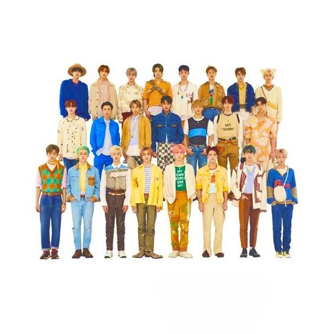

|

NI NYOMAN SUTARINI NCT singkatan dari Neo Culture Technology adalah sebuah grup vokal pria asal Korea Selatan yang dibentuk oleh SM Entertainment. Diperkenalkan pada Januari 2016, grup tersebut saat ini terdiri dari 26 anggota yang terbagi menjadi enam sub unit berbeda, yaitu NCT U, NCT 127, NCT Dream, NCT WayV, NCT DoJaeJung, dan NCT Wish. Mereka terkenal karena keragamannya dalam bermusik, kemampuan vokal dance dan rap, serta penampilan bertenaga, dan telah disebut-sebut sebagai "boy band paling eksperimental" K-Pop karena (sebelumnya) memiliki konsep dengan jumlah anggota yang terus bertambah. Hingga Mei 2023, NCT telah mencatat lebih dari 32 juta penjualan album di seluruh sub-unit, menjadikan mereka artis terlaris di bawah SM Entertainment dan salah satu artis K-Pop terlaris sepanjang masa. |
|
|
Dibuat Oleh: Sutarini |